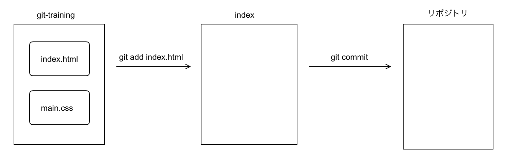

<!DOCTYPE HTML>
<html lang="ja" >
    <head>
        <meta charset="UTF-8">
        <meta content="text/html; charset=utf-8" http-equiv="Content-Type">
        <title>Git · GitBook</title>
        <meta http-equiv="X-UA-Compatible" content="IE=edge" />
        <meta name="description" content="">
        <meta name="generator" content="GitBook 3.2.3">
        
        
        
    
    <link rel="stylesheet" href="../gitbook/style.css">

    
            
                
                <link rel="stylesheet" href="../gitbook/gitbook-plugin-expand-active-chapter/expand-active-chapter.css">
                
            
                
                <link rel="stylesheet" href="../gitbook/gitbook-plugin-navigator/plugin.css">
                
            
                
                <link rel="stylesheet" href="../gitbook/gitbook-plugin-comment/plugin.css">
                
            
                
                <link rel="stylesheet" href="../gitbook/gitbook-plugin-highlight/website.css">
                
            
                
                <link rel="stylesheet" href="../gitbook/gitbook-plugin-search/search.css">
                
            
                
                <link rel="stylesheet" href="../gitbook/gitbook-plugin-fontsettings/website.css">
                
            
        

    

    
        
    
        
    
        
    
        
    
        
    
        
    

        
    
    
    <meta name="HandheldFriendly" content="true"/>
    <meta name="viewport" content="width=device-width, initial-scale=1, user-scalable=no">
    <meta name="apple-mobile-web-app-capable" content="yes">
    <meta name="apple-mobile-web-app-status-bar-style" content="black">
    <link rel="apple-touch-icon-precomposed" sizes="152x152" href="../gitbook/images/apple-touch-icon-precomposed-152.png">
    <link rel="shortcut icon" href="../gitbook/images/favicon.ico" type="image/x-icon">

    
    
    <link rel="prev" href="documents.html" />
    

    </head>
    <body>
        
<div class="book">
    <div class="book-summary">
        
            
<div id="book-search-input" role="search">
    <input type="text" placeholder="検索すると入力" />
</div>

            
                <nav role="navigation">
                


<ul class="summary">
    
    

    

    
        
        
    
        <li class="chapter " data-level="1.1" data-path="../">
            
                <a href="../">
            
                    
                    はじめての方
            
                </a>
            

            
            <ul class="articles">
                
    
        <li class="chapter " data-level="1.1.1" data-path="frontend.html">
            
                <a href="frontend.html">
            
                    
                    frontend
            
                </a>
            

            
            <ul class="articles">
                
    
        <li class="chapter " data-level="1.1.1.1" data-path="sass.html">
            
                <a href="sass.html">
            
                    
                    Sass
            
                </a>
            

            
        </li>
    
        <li class="chapter " data-level="1.1.1.2" data-path="webpack.html">
            
                <a href="webpack.html">
            
                    
                    webpack
            
                </a>
            

            
        </li>
    
        <li class="chapter " data-level="1.1.1.3" data-path="documents.html">
            
                <a href="documents.html">
            
                    
                    Javascript
            
                </a>
            

            
        </li>
    
        <li class="chapter active" data-level="1.1.1.4" data-path="git.html">
            
                <a href="git.html">
            
                    
                    Git
            
                </a>
            

            
        </li>
    

            </ul>
            
        </li>
    

            </ul>
            
        </li>
    

    

    <li class="divider"></li>

    <li>
        <a href="https://www.gitbook.com" target="blank" class="gitbook-link">
            GitBookで公開 
        </a>
    </li>
</ul>


                </nav>
            
        
    </div>

    <div class="book-body">
        
            <div class="body-inner">
                
                    

<div class="book-header" role="navigation">
    

    <!-- Title -->
    <h1>
        <i class="fa fa-circle-o-notch fa-spin"></i>
        <a href=".." >Git</a>
    </h1>
</div>


                    <div class="page-wrapper" tabindex="-1" role="main">
                        <div class="page-inner">
                            
<div id="book-search-results">
    <div class="search-noresults">
    
                                <section class="normal markdown-section">
                                
                                <h1 id="Git&#x3068;&#x306F;&#xFF1F;">Git&#x3068;&#x306F;&#xFF1F;</h1>
<p><strong>&#x5206;&#x6563;&#x578B;&#x30D0;&#x30FC;&#x30B8;&#x30E7;&#x30F3;&#x7BA1;&#x7406;&#x30B7;&#x30B9;&#x30C6;&#x30E0;</strong></p>
<p>&#x4F55;&#x304C;&#x3067;&#x304D;&#x308B;&#x306E;&#xFF1F;</p>
<ul>
<li>&#x30D5;&#x30A1;&#x30A4;&#x30EB;&#x306E;&#x5909;&#x66F4;&#x5C65;&#x6B74;&#x3092;&#x4FDD;&#x5B58;&#x3059;&#x308B;&#x3002;</li>
<li>&#x30D5;&#x30A1;&#x30A4;&#x30EB;&#x3092;&#x4EE5;&#x524D;&#x306E;&#x72B6;&#x614B;&#x306B;&#x623B;&#x3059;&#x3002;</li>
<li>&#x5171;&#x540C;&#x958B;&#x767A;&#x3092;&#x884C;&#x3046;&#x3002;</li>
</ul>
<h2 id="git&#x3092;&#x4F7F;&#x7528;&#x3057;&#x3066;&#x307F;&#x3088;&#x3046;">1. git&#x3092;&#x4F7F;&#x7528;&#x3057;&#x3066;&#x307F;&#x3088;&#x3046;</h2>
<p>&#x203B; mac&#x306E;&#x65B9;&#x306F;&#x30BF;&#x30FC;&#x30DF;&#x30CA;&#x30EB;&#x3001;windows&#x306E;&#x65B9;&#x306F;git bash&#x3067;&#x5B9F;&#x884C;&#x3057;&#x3066;&#x304F;&#x3060;&#x3055;&#x3044;&#x3002;</p>
<h3 id="&#x521D;&#x671F;&#x5316;">1.1. &#x521D;&#x671F;&#x5316;</h3>
<p>git&#x306F;&#x57FA;&#x672C;&#x7684;&#x306B;&#x3001;&#x30D7;&#x30ED;&#x30B8;&#x30A7;&#x30AF;&#x30C8;&#x3054;&#x3068;&#x306B;&#x7BA1;&#x7406;&#x3057;&#x3066;&#x3044;&#x304D;&#x307E;&#x3059;&#x3002;&#x307E;&#x305A;&#x306F;&#x3001;git&#x3067;&#x7BA1;&#x7406;&#x3057;&#x305F;&#x3044;&#x30D7;&#x30ED;&#x30B8;&#x30A7;&#x30AF;&#x30C8;&#x3092;&#x3001;git&#x3067;&#x7BA1;&#x7406;&#x3059;&#x308B;&#x305F;&#x3081;&#x306B;&#x4EE5;&#x4E0B;&#x306E;&#x624B;&#x9806;&#x3067;&#x521D;&#x671F;&#x5316;&#x3057;&#x307E;&#x3057;&#x3087;&#x3046;&#x3002;&#x30DB;&#x30FC;&#x30E0;&#x30C7;&#x30A3;&#x30EC;&#x30AF;&#x30C8;&#x30EA;&#x76F4;&#x4E0B;&#x306B;&#x3001;git-training&#x3068;&#x3044;&#x3046;&#x30C7;&#x30A3;&#x30EC;&#x30AF;&#x30C8;&#x30EA;&#x3092;&#x4F5C;&#x6210;&#x3057;&#x3001;&#x4EE5;&#x4E0B;&#x306E;&#x30B3;&#x30DE;&#x30F3;&#x30C9;&#x3092;&#x5B9F;&#x884C;&#x3057;&#x307E;&#x3057;&#x3087;&#x3046;&#x3002;</p>
<pre><code class="lang-js">$ cd ~/git-training
//cd&#x30B3;&#x30DE;&#x30F3;&#x30C9;&#x3092;&#x7528;&#x3044;&#x3066;&#x3001;&#x30AB;&#x30EC;&#x30F3;&#x30C8;&#x30C7;&#x30A3;&#x30EC;&#x30AF;&#x30C8;&#x30EA;&#x3092;&#x30D7;&#x30ED;&#x30B8;&#x30A7;&#x30AF;&#x30C8;&#x30C7;&#x30A3;&#x30EC;&#x30AF;&#x30C8;&#x30EA;&#x306E;&#x30EB;&#x30FC;&#x30C8;&#x307E;&#x3067;&#x79FB;&#x52D5;&#x3057;&#x307E;&#x3059;&#x3002;

$ git init
//git init&#x30B3;&#x30DE;&#x30F3;&#x30C9;&#x3092;&#x7528;&#x3044;&#x3066;&#x521D;&#x671F;&#x5316;&#x3057;&#x307E;&#x3059;&#x3002;

&#x4E0A;&#x8A18;&#x306E;&#x30B3;&#x30DE;&#x30F3;&#x30C9;&#x3092;&#x7528;&#x3044;&#x308B;&#x3068;&#x3001;&#x4EE5;&#x4E0B;&#x306E;&#x3088;&#x3046;&#x306B;&#x51FA;&#x529B;&#x3055;&#x308C;&#x307E;&#x3059;&#x3002;
</code></pre>
<pre><code class="lang-js">$ git init
Initialized empty Git repository (&#x30C7;&#x30A3;&#x30EC;&#x30AF;&#x30C8;&#x30EA;&#x30D1;&#x30B9;)/.git
</code></pre>
<p>git init&#x30B3;&#x30DE;&#x30F3;&#x30C9;&#x3092;&#x7528;&#x3044;&#x308B;&#x3053;&#x3068;&#x3067;&#x3001;&#x30D7;&#x30ED;&#x30B8;&#x30A7;&#x30AF;&#x30C8;&#x30C7;&#x30A3;&#x30EC;&#x30AF;&#x30C8;&#x30EA;&#x76F4;&#x4E0B;&#x306B;&#x3001;.git&#x3068;&#x3044;&#x3046;&#x540D;&#x524D;&#x306E;&#x30C7;&#x30A3;&#x30EC;&#x30AF;&#x30C8;&#x30EA;&#x304C;&#x3067;&#x304D;&#x307E;&#x3059;&#x3002;&#x4F46;&#x3057;&#x3001;&#x3053;&#x306E;&#x30D5;&#x30A9;&#x30EB;&#x30C0;&#x306F;.&#x304B;&#x3089;&#x59CB;&#x307E;&#x3063;&#x3066;&#x3044;&#x307E;&#x3059;&#x3002;.&#x304B;&#x3089;&#x59CB;&#x307E;&#x308B;&#x30D5;&#x30A9;&#x30EB;&#x30C0;&#x306F;&#x3001;&#x96A0;&#x3057;&#x30D5;&#x30A9;&#x30EB;&#x30C0;&#x3068;&#x306A;&#x308B;&#x306E;&#x3067;&#x3001;&#x305D;&#x306E;&#x307E;&#x307E;&#x3067;&#x306F;&#x78BA;&#x8A8D;&#x3067;&#x304D;&#x307E;&#x305B;&#x3093;&#x3002;&#x4EE5;&#x4E0B;&#x306E;&#x30B3;&#x30DE;&#x30F3;&#x30C9;&#x3092;&#x5B9F;&#x884C;&#x3057;&#x3001;.git&#x30C7;&#x30A3;&#x30EC;&#x30AF;&#x30C8;&#x30EA;&#x304C;&#x751F;&#x6210;&#x3055;&#x308C;&#x305F;&#x3053;&#x3068;&#x3092;&#x78BA;&#x8A8D;&#x3057;&#x307E;&#x3057;&#x3087;&#x3046;&#x3002;</p>
<pre><code class="lang-js">$ ls -a
. .. .git
</code></pre>
<h3 id="&#x30B9;&#x30C6;&#x30FC;&#x30B8;&#x30F3;&#x30B0;">1.2. &#x30B9;&#x30C6;&#x30FC;&#x30B8;&#x30F3;&#x30B0;</h3>
<p>&#x6B21;&#x306E;&#x30B3;&#x30DE;&#x30F3;&#x30C9;&#x3092;&#x5B66;&#x7FD2;&#x3059;&#x308B;&#x524D;&#x306B;&#x3001;git&#x306E;&#x57FA;&#x672C;&#x6982;&#x5FF5;&#x3092;&#x7406;&#x89E3;&#x3059;&#x308B;&#x5FC5;&#x8981;&#x304C;&#x3042;&#x308A;&#x307E;&#x3059;&#x3002;</p>
<p></p>
<p>git&#x3092;&#x7528;&#x3044;&#x3066;&#x5909;&#x66F4;&#x5C65;&#x6B74;&#x3092;&#x4FDD;&#x5B58;&#x3059;&#x308B;&#x306B;&#x306F;&#x3001;&#x4EE5;&#x4E0B;&#x306E;&#x6BB5;&#x968E;&#x3092;&#x8E0F;&#x3080;&#x5FC5;&#x8981;&#x304C;&#x3042;&#x308A;&#x307E;&#x3059;&#x3002;</p>
<ol>
<li>&#x30D5;&#x30A1;&#x30A4;&#x30EB;&#x3092;&#x5909;&#x66F4;&#x3057;&#x3001;&#x4FDD;&#x5B58;&#x3059;&#x308B;&#x3002;</li>
<li>&#x30D5;&#x30A1;&#x30A4;&#x30EB;&#x306E;&#x5909;&#x66F4;&#x3092;staging&#x30A8;&#x30EA;&#x30A2;&#x306B;&#x8FFD;&#x52A0;&#x3059;&#x308B;&#x3002;</li>
<li>&#x30D5;&#x30A1;&#x30A4;&#x30EB;&#x306E;&#x5909;&#x66F4;&#x3092;&#x30B3;&#x30DF;&#x30C3;&#x30C8;(&#x8A18;&#x9332;)&#x3059;&#x308B;&#x3002;</li>
</ol>
<p>&#x5909;&#x66F4;&#x3092;&#x4FDD;&#x5B58;&#x3057;&#x305F;&#x77AC;&#x9593;&#x306B;&#x5909;&#x66F4;&#x5C65;&#x6B74;&#x304C;&#x4FDD;&#x5B58;&#x3055;&#x308C;&#x308B;&#x308F;&#x3051;&#x3067;&#x306F;&#x3042;&#x308A;&#x307E;&#x305B;&#x3093;&#x3002;
&#x5FC5;&#x305A;&#x3001;<strong>&#x30B9;&#x30C6;&#x30FC;&#x30B8;&#x30F3;&#x30B0;</strong>&#x3057;&#x3001;<strong>&#x30B3;&#x30DF;&#x30C3;&#x30C8;</strong>&#x3059;&#x308B;&#x5FC5;&#x8981;&#x304C;&#x3042;&#x308A;&#x307E;&#x3059;&#x3002;</p>
<p>&#x30B9;&#x30C6;&#x30FC;&#x30B8;&#x30F3;&#x30B0;&#x3068;&#x306F;&#x3001;&#x4E00;&#x4F53;&#x4F55;&#x3067;&#x3057;&#x3087;&#x3046;&#x304B;&#x3002;&#x30D5;&#x30A1;&#x30A4;&#x30EB;&#x3092;&#x4FDD;&#x5B58;&#x3057;&#x3066;&#x305D;&#x306E;&#x307E;&#x307E;&#x5909;&#x66F4;&#x5C65;&#x6B74;&#x304C;&#x4FDD;&#x5B58;&#x3055;&#x308C;&#x306A;&#x3044;&#x306E;&#x306F;&#x3068;&#x3082;&#x304B;&#x304F;&#x3001;&#x3059;&#x3050;&#x306B;&#x30B3;&#x30DF;&#x30C3;&#x30C8;&#x3055;&#x305B;&#x3066;&#x307B;&#x3057;&#x3044;&#x3082;&#x306E;&#x3067;&#x3059;&#x3002;</p>
<p>&#x30B9;&#x30C6;&#x30FC;&#x30B8;&#x30F3;&#x30B0;&#x306B;&#x306F;&#x3001;&#x300C;&#x5909;&#x66F4;&#x3092;&#x8A18;&#x9332;&#x3057;&#x305F;&#x3044;&#x30D5;&#x30A1;&#x30A4;&#x30EB;&#x3092;&#x6307;&#x5B9A;&#x3059;&#x308B;&#x300D;&#x3068;&#x3044;&#x3046;&#x5F79;&#x5272;&#x304C;&#x3042;&#x308A;&#x307E;&#x3059;&#x3002;&#x3064;&#x307E;&#x308A;&#x3001;&#x300C;&#x5909;&#x66F4;&#x3092;&#x8A18;&#x9332;&#x3057;&#x305F;&#x304F;&#x306A;&#x3044;&#x30D5;&#x30A1;&#x30A4;&#x30EB;&#x3092;&#x610F;&#x56F3;&#x7684;&#x306B;&#x6392;&#x9664;&#x3059;&#x308B;&#x300D;&#x3053;&#x3068;&#x3082;&#x3067;&#x304D;&#x308B;&#x3068;&#x3044;&#x3046;&#x3053;&#x3068;&#x3067;&#x3059;&#x3002;
&#x305D;&#x306E;&#x3088;&#x3046;&#x306B;&#x3057;&#x3066;&#x3001;&#x30B3;&#x30DF;&#x30C3;&#x30C8;&#x3057;&#x305F;&#x3044;&#x30D5;&#x30A1;&#x30A4;&#x30EB;&#x3092;&#x4ED5;&#x5206;&#x3051;&#x3059;&#x308B;&#x306E;&#x304C;&#x3001;&#x30B9;&#x30C6;&#x30FC;&#x30B8;&#x30F3;&#x30B0;&#x306E;&#x76EE;&#x7684;&#x306B;&#x306A;&#x308A;&#x307E;&#x3059;&#x3002;</p>
<p>&#x5B9F;&#x969B;&#x306B;&#x30B9;&#x30C6;&#x30FC;&#x30B8;&#x30F3;&#x30B0;&#x3092;&#x884C;&#x3063;&#x3066;&#x307F;&#x307E;&#x3057;&#x3087;&#x3046;&#x3002;&#x307E;&#x305A;&#x3001;git-training&#x30C7;&#x30A3;&#x30EC;&#x30AF;&#x30C8;&#x30EA;&#x914D;&#x4E0B;&#x306B;&#x3001;index.html&#x3068;main.css&#x3092;&#x7528;&#x610F;&#x3057;&#x307E;&#x3059;&#x3002;</p>
<pre><code class="lang-js">$ touch index.html
$ touch main.js
</code></pre>
<p>
index.html&#x3092;&#x30B9;&#x30C6;&#x30FC;&#x30B8;&#x30F3;&#x30B0;&#x306B;&#x8FFD;&#x52A0;&#x3057;&#x307E;&#x3057;&#x3087;&#x3046;&#x3002;</p>
<pre><code class="lang-js">$ git add index.html
</code></pre>
<p>git status&#x3092;&#x5B9F;&#x884C;&#x3059;&#x308B;&#x3068;&#x3001;&#x73FE;&#x5728;&#x306E;&#x72B6;&#x614B;&#x3092;&#x78BA;&#x8A8D;&#x3059;&#x308B;&#x3053;&#x3068;&#x304C;&#x3067;&#x304D;&#x307E;&#x3059;&#x3002;</p>
<pre><code class="lang-js">$ git status
On branch master

No commits yet

Changes to be committed:
use <span class="hljs-string">&quot;git rm --cached &lt;file&gt;...&quot;</span> to unstage)

    <span class="hljs-keyword">new</span> file:   index.html   

Untracked files:           
(use <span class="hljs-string">&quot;git add &lt;file&gt;...&quot;</span> to include <span class="hljs-keyword">in</span> what will be committed)

    main.css
</code></pre>
<p>&#x7FFB;&#x8A33;&#x3057;&#x3066;&#x307F;&#x307E;&#x3059;&#x3002;</p>
<pre><code class="lang-js">$ git status
On branch master
<span class="hljs-comment">//&#x30DE;&#x30B9;&#x30BF;&#x30FC;&#x30D6;&#x30E9;&#x30F3;&#x30C1;&#x306B;&#x304A;&#x3044;&#x3066;</span>

No commits yet
&#x307E;&#x3060;&#x30B3;&#x30DF;&#x30C3;&#x30C8;&#x3055;&#x308C;&#x3066;&#x3044;&#x307E;&#x305B;&#x3093;&#x3002;

Changes to be committed:
use <span class="hljs-string">&quot;git rm --cached &lt;file&gt;...&quot;</span> to unstage)
<span class="hljs-comment">//&#x30B3;&#x30DF;&#x30C3;&#x30C8;&#x3055;&#x308C;&#x308B;&#x3079;&#x304D;&#x5909;&#x66F4;(&#x30B3;&#x30DF;&#x30C3;&#x30C8;&#x5BFE;&#x8C61;&#x306E;&#x5909;&#x66F4;&#x5185;&#x5BB9;)</span>
<span class="hljs-comment">//&#x30B9;&#x30C6;&#x30FC;&#x30B8;&#x30F3;&#x30B0;&#x304B;&#x3089;&#x5916;&#x3059;&#x306B;&#x306F;&#x30B3;&#x30DE;&#x30F3;&#x30C9;&#x3092;&#x5B9F;&#x884C;&#x3057;&#x3066;&#x4E0B;&#x3055;&#x3044;&#x3002;</span>

    <span class="hljs-keyword">new</span> file:   index.html  
    <span class="hljs-comment">//index.html&#x304C;&#x65B0;&#x3057;&#x304F;&#x4F5C;&#x6210;&#x3055;&#x308C;&#x307E;&#x3057;&#x305F;&#x3002; </span>

Untracked files:           
(use <span class="hljs-string">&quot;git add &lt;file&gt;...&quot;</span> to include <span class="hljs-keyword">in</span> what will be committed)
<span class="hljs-comment">//&#x8FFD;&#x8DE1;&#x3057;&#x3066;&#x3044;&#x306A;&#x3044;&#x30D5;&#x30A1;&#x30A4;&#x30EB;&#x306F;&#x4EE5;&#x4E0B;(&#x30B3;&#x30DF;&#x30C3;&#x30C8;&#x5BFE;&#x8C61;&#x306B;&#x3059;&#x308B;&#x306B;&#x306F;add&#x30B3;&#x30DE;&#x30F3;&#x30C9;&#x3092;&#x4F7F;&#x7528;&#x3057;&#x3066;&#x4E0B;&#x3055;&#x3044;&#x3002;)</span>

    main.css
</code></pre>
<p>&#x3053;&#x306E;&#x3088;&#x3046;&#x306B;&#x3001;git add&#x30B3;&#x30DE;&#x30F3;&#x30C9;&#x3092;&#x4F7F;&#x7528;&#x3059;&#x308B;&#x3053;&#x3068;&#x3067;&#x3001;&#x30B9;&#x30C6;&#x30FC;&#x30B8;&#x30F3;&#x30B0;&#x306B;&#x8FFD;&#x52A0;&#x3059;&#x308B;&#x3053;&#x3068;&#x304C;&#x53EF;&#x80FD;&#x3067;&#x3059;&#x3002;</p>
<p>main.css&#x306B;&#x95A2;&#x3057;&#x3066;&#x306F;&#x3001;add&#x3057;&#x3066;&#x3044;&#x306A;&#x3044;&#x305F;&#x3081;&#x3001;&#x30B3;&#x30DF;&#x30C3;&#x30C8;&#x5BFE;&#x8C61;&#x5916;&#x3068;&#x306A;&#x3063;&#x3066;&#x3044;&#x307E;&#x3059;&#x3002;</p>
<p>&#x306A;&#x304A;&#x3001;&#x4E0A;&#x306E;&#x3088;&#x3046;&#x306B;&#x30D5;&#x30A1;&#x30A4;&#x30EB;&#x3092;&#x4E00;&#x3064;&#x305A;&#x3064;&#x30B9;&#x30C6;&#x30FC;&#x30B8;&#x30F3;&#x30B0;&#x3057;&#x3066;&#x3044;&#x304F;&#x3053;&#x3068;&#x3082;&#x53EF;&#x80FD;&#x3067;&#x3059;&#x304C;&#x3001;&#x30D7;&#x30ED;&#x30B8;&#x30A7;&#x30AF;&#x30C8;&#x30C7;&#x30A3;&#x30EC;&#x30AF;&#x30C8;&#x30EA;&#x76F4;&#x4E0B;&#x306E;&#x30D5;&#x30A1;&#x30A4;&#x30EB;&#x3092;&#x5168;&#x3066;&#x30B9;&#x30C6;&#x30FC;&#x30B8;&#x30F3;&#x30B0;&#x3059;&#x308B;&#x30AA;&#x30D7;&#x30B7;&#x30E7;&#x30F3;&#x3082;&#x3042;&#x308A;&#x307E;&#x3059;&#x3002;</p>
<pre><code>$ git add -A
</code></pre><h3 id="&#x30B3;&#x30DF;&#x30C3;&#x30C8;">1.3. &#x30B3;&#x30DF;&#x30C3;&#x30C8;</h3>
<p>&#x5909;&#x66F4;&#x3092;&#x8A18;&#x9332;&#x3057;&#x305F;&#x3044;&#x30D5;&#x30A1;&#x30A4;&#x30EB;&#x3092;&#x30B9;&#x30C6;&#x30FC;&#x30B8;&#x30F3;&#x30B0;&#x30A8;&#x30EA;&#x30A2;&#x306B;&#x79FB;&#x52D5;&#x3057;&#x307E;&#x3057;&#x305F;&#x3002;main.css&#x3092;add&#x3057;&#x3066;&#x3044;&#x306A;&#x3051;&#x308C;&#x3070;&#x3001;&#x4EE5;&#x4E0B;&#x306E;&#x3088;&#x3046;&#x306A;&#x72B6;&#x614B;&#x306B;&#x306A;&#x3063;&#x3066;&#x3044;&#x307E;&#x3059;&#x3002;</p>
<p></p>
<p>&#x30B9;&#x30C6;&#x30FC;&#x30B8;&#x30F3;&#x30B0;&#x3055;&#x308C;&#x305F;&#x5909;&#x66F4;&#x5185;&#x5BB9;&#x3092;&#x30B3;&#x30DF;&#x30C3;&#x30C8;&#x3059;&#x308B;&#x3053;&#x3068;&#x3067;&#x3001;&#x5909;&#x66F4;&#x5185;&#x5BB9;&#x3092;&#x4FDD;&#x5B58;&#x3059;&#x308B;&#x3053;&#x3068;&#x304C;&#x3067;&#x304D;&#x307E;&#x3059;&#x3002;</p>
<p>&#x5B9F;&#x969B;&#x306B;&#x30B3;&#x30DF;&#x30C3;&#x30C8;&#x3057;&#x3066;&#x307F;&#x307E;&#x3057;&#x3087;&#x3046;&#x3002;</p>
<pre><code>$ git commit -m &quot;index.html&#x3092;&#x8FFD;&#x52A0;&quot;
[master (root-commit) f994ed5] index.html&#x3092;&#x8FFD;&#x52A0;
 1 file changed, 0 insertions(+), 0 deletions(-)
 create mode 100644 index.html
</code></pre><p>&#x30B3;&#x30DF;&#x30C3;&#x30C8;&#x3059;&#x308B;&#x306B;&#x306F;&#x3001;git commit&#x30B3;&#x30DE;&#x30F3;&#x30C9;&#x3092;&#x5B9F;&#x884C;&#x3057;&#x307E;&#x3059;&#x3002;

&#x30B3;&#x30DF;&#x30C3;&#x30C8;&#x3059;&#x308B;&#x969B;&#x306B;&#x306F;&#x3001;&#x300C;&#x30E1;&#x30C3;&#x30BB;&#x30FC;&#x30B8;&#x300D;&#x304C;&#x5FC5;&#x8981;&#x3067;&#x3059;&#x3002;
-m&#x30AA;&#x30D7;&#x30B7;&#x30E7;&#x30F3;&#x306F;&#x3001;&#x30A4;&#x30F3;&#x30E9;&#x30A4;&#x30F3;(&#x4E00;&#x884C;)&#x3067;&#x30B3;&#x30E1;&#x30F3;&#x30C8;&#x3092;&#x66F8;&#x304F;&#x969B;&#x306B;&#x4F7F;&#x7528;&#x3067;&#x304D;&#x308B;&#x30AA;&#x30D7;&#x30B7;&#x30E7;&#x30F3;&#x3067;&#x3059;&#x3002;
&#x3082;&#x3063;&#x3068;&#x5177;&#x4F53;&#x7684;&#x306B;&#x66F8;&#x304D;&#x305F;&#x3044;&#x969B;&#x306F;&#x3001;-m&#x30AA;&#x30D7;&#x30B7;&#x30E7;&#x30F3;&#x306A;&#x3057;&#x3067;&#x4EE5;&#x4E0B;&#x306E;&#x3088;&#x3046;&#x306B;&#x5B9F;&#x884C;&#x3057;&#x307E;&#x3059;&#x3002;</p>
<pre><code>$ git commit
(&#x30A8;&#x30C7;&#x30A3;&#x30BF;&#x304C;&#x958B;&#x304D;&#x307E;&#x3059;&#x3002;)
</code></pre><p>git log&#x30B3;&#x30DE;&#x30F3;&#x30C9;&#x3092;&#x4F7F;&#x7528;&#x3059;&#x308B;&#x3053;&#x3068;&#x3067;&#x3001;&#x904E;&#x53BB;&#x306E;&#x30B3;&#x30DF;&#x30C3;&#x30C8;&#x5C65;&#x6B74;&#x3092;&#x78BA;&#x8A8D;&#x3059;&#x308B;&#x4E8B;&#x304C;&#x3067;&#x304D;&#x307E;&#x3059;&#x3002;</p>
<pre><code>$ git log
</code></pre><p>&#x3053;&#x306E;&#x3088;&#x3046;&#x306B;&#x3001;&#x30B9;&#x30C6;&#x30FC;&#x30B8;&#x30F3;&#x30B0;&#x3057;&#x3001;&#x30B3;&#x30DF;&#x30C3;&#x30C8;&#x3092;&#x884C;&#x3046;&#x3053;&#x3068;&#x3092;&#x7E70;&#x308A;&#x8FD4;&#x3057;&#x3001;&#x5909;&#x66F4;&#x3092;&#x8A18;&#x9332;&#x3057;&#x3066;&#x3044;&#x304F;&#x3053;&#x3068;&#x304C;git&#x306E;&#x57FA;&#x672C;&#x306B;&#x306A;&#x308A;&#x307E;&#x3059;&#x3002;</p>
<div id="anchors-navbar"><i class="fa fa-anchor"></i><ul><p><a href="#Git&#x3068;&#x306F;&#xFF1F;">Git&#x3068;&#x306F;&#xFF1F;</a></p><li><a href="#git&#x3092;&#x4F7F;&#x7528;&#x3057;&#x3066;&#x307F;&#x3088;&#x3046;">1. git&#x3092;&#x4F7F;&#x7528;&#x3057;&#x3066;&#x307F;&#x3088;&#x3046;</a></li><ul><li><a href="#&#x521D;&#x671F;&#x5316;">1.1. &#x521D;&#x671F;&#x5316;</a></li><li><a href="#&#x30B9;&#x30C6;&#x30FC;&#x30B8;&#x30F3;&#x30B0;">1.2. &#x30B9;&#x30C6;&#x30FC;&#x30B8;&#x30F3;&#x30B0;</a></li><li><a href="#&#x30B3;&#x30DF;&#x30C3;&#x30C8;">1.3. &#x30B3;&#x30DF;&#x30C3;&#x30C8;</a></li></ul></ul></div><a href="#git&#x3092;&#x4F7F;&#x7528;&#x3057;&#x3066;&#x307F;&#x3088;&#x3046;" id="goTop"><i class="fa fa-arrow-up"></i></a>
                                
                                </section>
                            
    </div>
    <div class="search-results">
        <div class="has-results">
            
            <h1 class="search-results-title"><span class='search-results-count'></span> results matching "<span class='search-query'></span>"</h1>
            <ul class="search-results-list"></ul>
            
        </div>
        <div class="no-results">
            
            <h1 class="search-results-title">No results matching "<span class='search-query'></span>"</h1>
            
        </div>
    </div>
</div>

                        </div>
                    </div>
                
            </div>

            
                
                <a href="documents.html" class="navigation navigation-prev navigation-unique" aria-label="Previous page: Javascript">
                    <i class="fa fa-angle-left"></i>
                </a>
                
                
            
        
    </div>

    <script>
        var gitbook = gitbook || [];
        gitbook.push(function() {
            gitbook.page.hasChanged({"page":{"title":"Git","level":"1.1.1.4","depth":3,"previous":{"title":"Javascript","level":"1.1.1.3","depth":3,"path":"docs/documents.md","ref":"docs/documents.md","articles":[]},"dir":"ltr"},"config":{"plugins":["-sharing","hide-published-with","japanese-support","copy-code-button","expand-active-chapter","navigator","comment","livereload"],"styles":{"website":"styles/website.css","pdf":"styles/pdf.css","epub":"styles/epub.css","mobi":"styles/mobi.css","ebook":"styles/ebook.css","print":"styles/print.css"},"pluginsConfig":{"livereload":{},"search":{},"lunr":{"maxIndexSize":1000000,"ignoreSpecialCharacters":false},"hide-published-with":{},"fontsettings":{"theme":"white","family":"sans","size":2},"japanese-support":{},"highlight":{},"navigator":{},"expand-active-chapter":{},"copy-code-button":{},"theme-default":{"styles":{"website":"styles/website.css","pdf":"styles/pdf.css","epub":"styles/epub.css","mobi":"styles/mobi.css","ebook":"styles/ebook.css","print":"styles/print.css"},"showLevel":false},"comment":{"highlightCommented":true}},"theme":"default","pdf":{"pageNumbers":true,"fontSize":12,"fontFamily":"Arial","paperSize":"a4","chapterMark":"pagebreak","pageBreaksBefore":"/","margin":{"right":62,"left":62,"top":56,"bottom":56}},"structure":{"langs":"LANGS.md","readme":"README.md","glossary":"GLOSSARY.md","summary":"SUMMARY.md"},"variables":{},"language":"ja","gitbook":"*"},"file":{"path":"docs/git.md","mtime":"2019-05-07T08:01:44.000Z","type":"markdown"},"gitbook":{"version":"3.2.3","time":"2019-05-07T08:00:17.710Z"},"basePath":"..","book":{"language":""}});
        });
    </script>
</div>

        
    <script src="../gitbook/gitbook.js"></script>
    <script src="../gitbook/theme.js"></script>
    
        
        <script src="../gitbook/gitbook-plugin-hide-published-with/plugin.js"></script>
        
    
        
        <script src="../gitbook/gitbook-plugin-copy-code-button/toggle.js"></script>
        
    
        
        <script src="../gitbook/gitbook-plugin-expand-active-chapter/expand-active-chapter.js"></script>
        
    
        
        <script src="../gitbook/gitbook-plugin-comment/plugin.js"></script>
        
    
        
        <script src="../gitbook/gitbook-plugin-livereload/plugin.js"></script>
        
    
        
        <script src="../gitbook/gitbook-plugin-search/search-engine.js"></script>
        
    
        
        <script src="../gitbook/gitbook-plugin-search/search.js"></script>
        
    
        
        <script src="../gitbook/gitbook-plugin-lunr/lunr.min.js"></script>
        
    
        
        <script src="../gitbook/gitbook-plugin-lunr/search-lunr.js"></script>
        
    
        
        <script src="../gitbook/gitbook-plugin-fontsettings/fontsettings.js"></script>
        
    

    </body>
</html>

